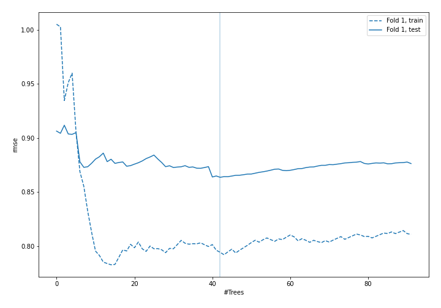
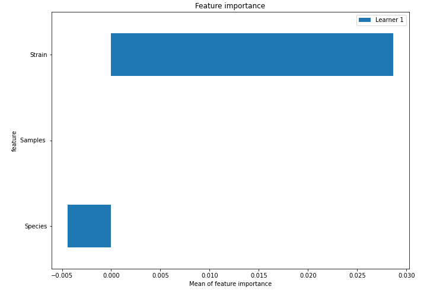
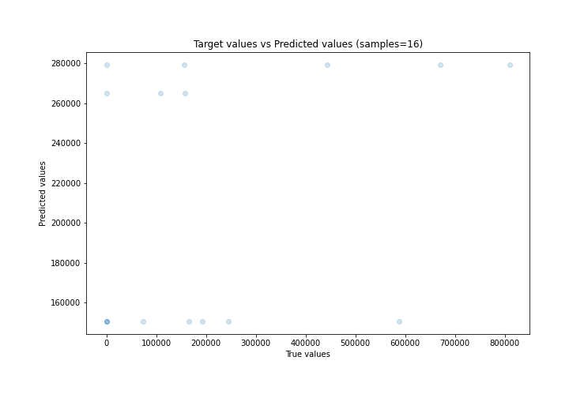
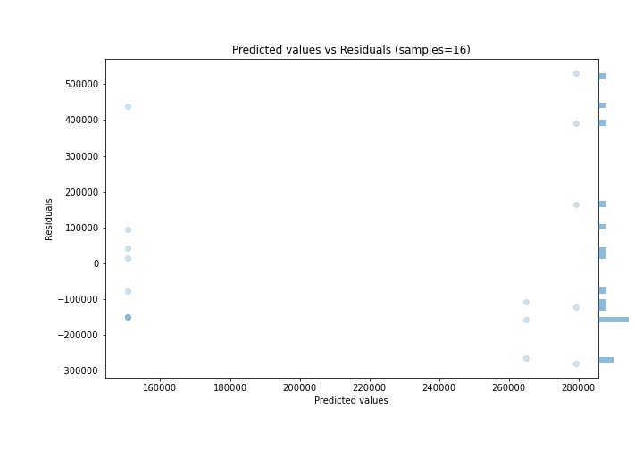
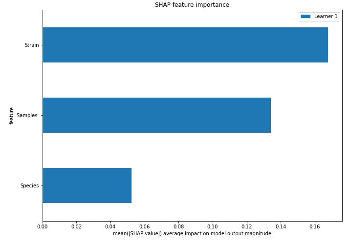

Summary of 4_Default_RandomForest¶
Random Forest¶
n_jobs: -1
criterion: mse
max_features: 0.9
min_samples_split: 30
max_depth: 4
eval_metric_name: rmse
explain_level: 2
Validation¶
validation_type: split
train_ratio: 0.75
shuffle: True
Optimized metric¶
rmse
Training time¶
2.8 seconds
Metric details:¶
Metric |
Score |
|---|---|
MAE |
196142 |
MSE |
5.86117e+10 |
RMSE |
242098 |
R2 |
0.0845826 |
MAPE |
2.80328e+20 |
Learning curves¶

Permutation-based Importance¶

True vs Predicted¶

Predicted vs Residuals¶

SHAP Importance¶
